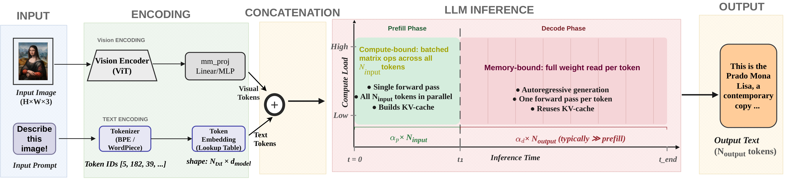
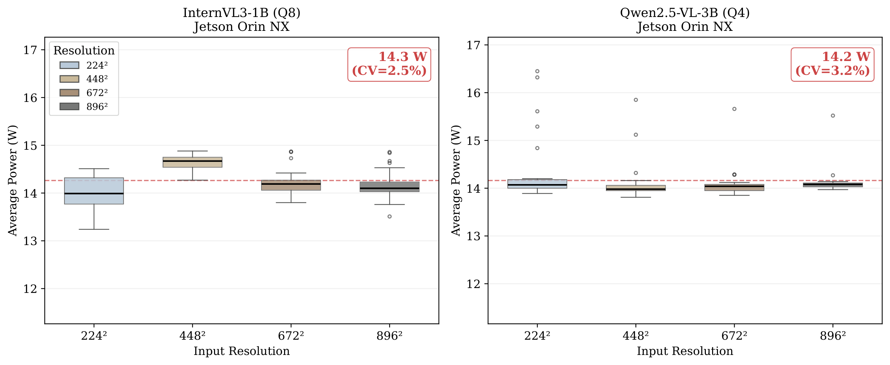
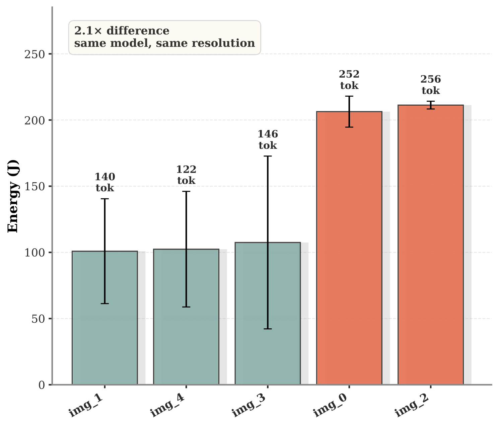
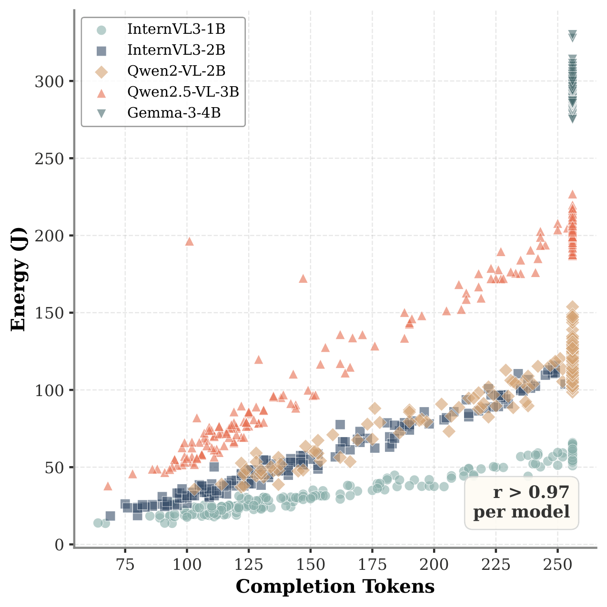
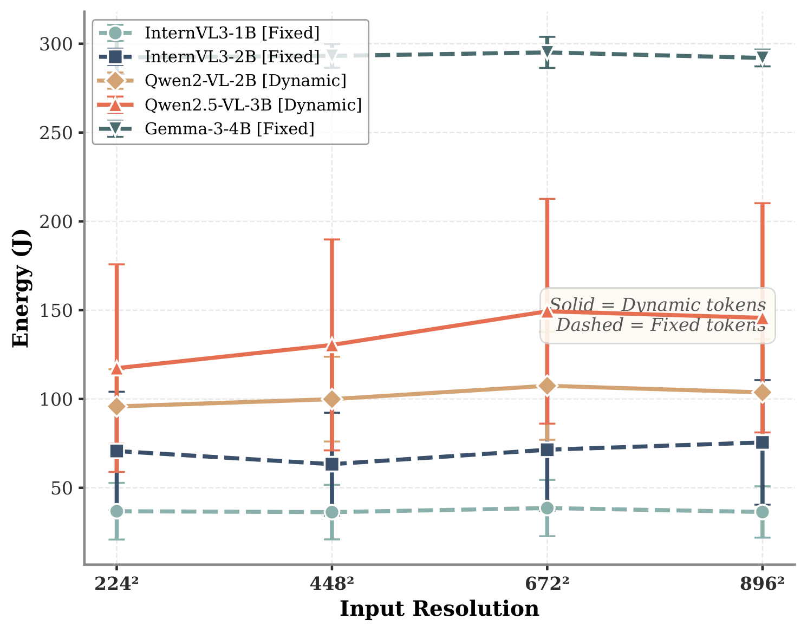
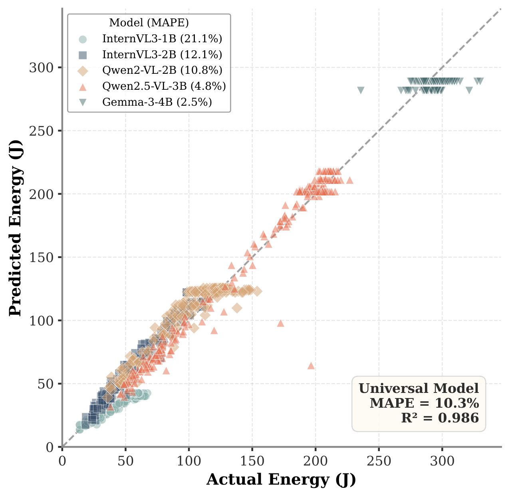
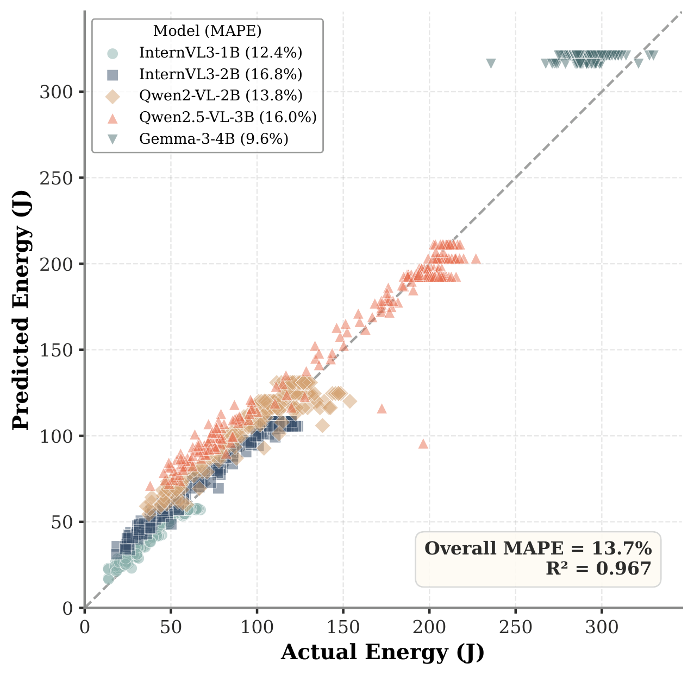

Uncovering the True Energy Bottleneck in Edge VLM Inference
Vision-Language Models run on edge devices like Jetson Orin NX and laptop GPUs. Most efficiency work assumes visual token processing is the bottleneck. We measured where energy actually goes.

Across 5 models and 2 hardware platforms, autoregressive decoding accounts for 86–97% of total energy. The bottleneck is how much the model says, not what it sees.
Prefill is compute-bound: all tokens process in parallel in one forward pass. Fast and cheap.
Decode is memory-bound: one forward pass per token, reading full model weights each time. Slow and expensive.
Our systematic profiling reveals counterintuitive truths about where energy goes—and where it doesn't.

Average inference power is a model-intrinsic constant, invariant to input resolution, image complexity, and prompt type (<5% CV). This means energy analysis reduces entirely to understanding inference time.

Same model, same resolution—yet up to 2.1× energy difference between images. The cause isn't visual processing cost, but how many tokens the model generates in response.

Energy scales linearly with output token count. Reducing output from 398 to 3 tokens cuts energy by 90%. Output length is the single most important variable.
Even removing all visual tokens saves at most 10% of energy for fixed-token models. By contrast, output length control saves 2–24× more.

Since power is constant and time depends on token counts, we build a simple linear energy model that works across all VLMs.


Three actionable strategies derived from our energy analysis.
Each output token costs 11–39× more than input. Setting a lower max_tokens is the single most effective energy control. 256→128 saves ~45%.
If your application needs high-resolution input (e.g., fine-grained inspection), use fixed-token architectures (InternVL3, Gemma-3) to avoid the resolution-dependent energy penalty of dynamic-token models.
Image content causes up to 4.1× energy variation—entirely through output length. For battery budgeting in embodied agents, use our predictor with worst-case max_tokens bounds.